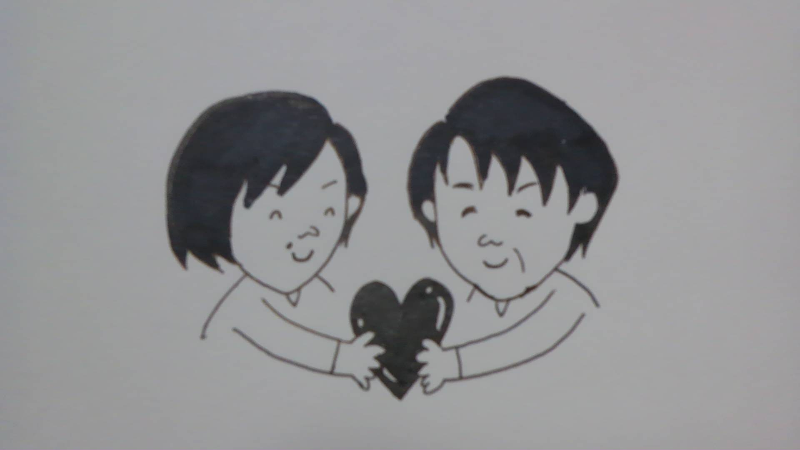
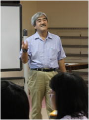
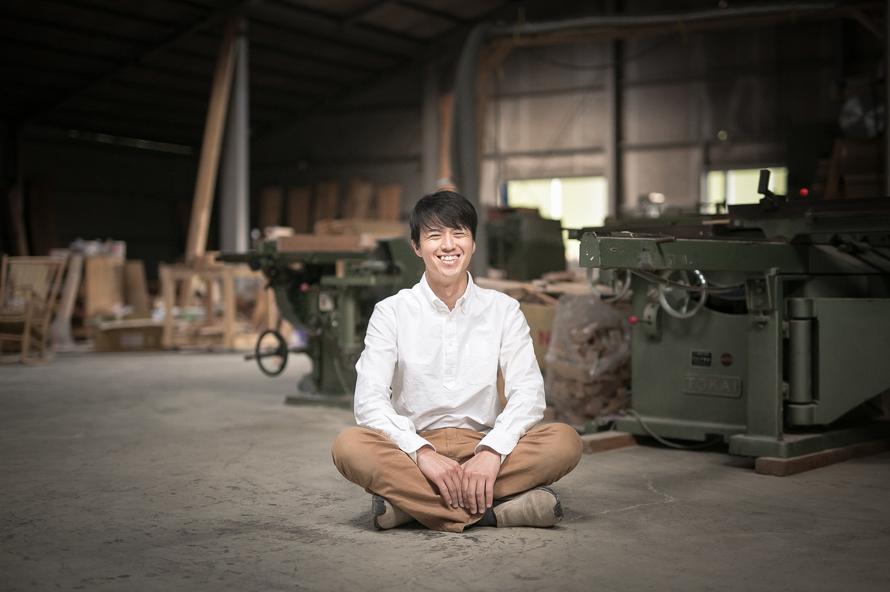
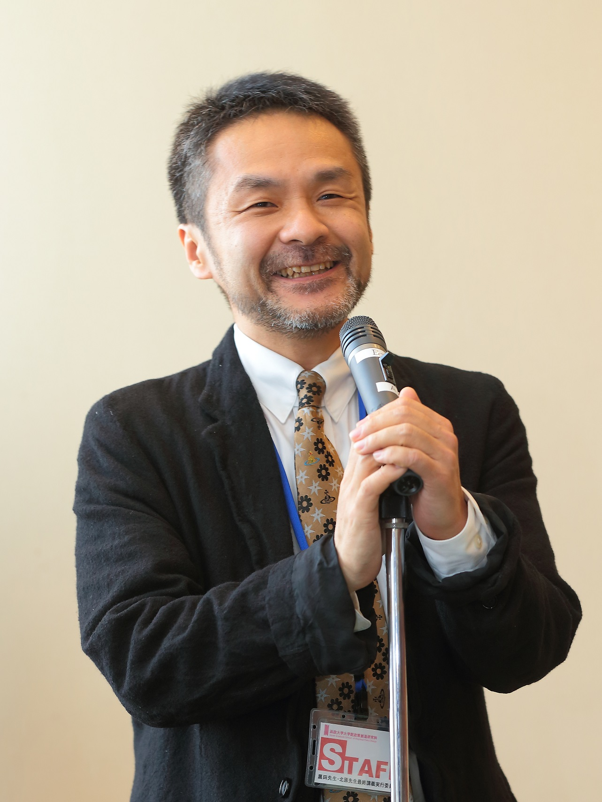
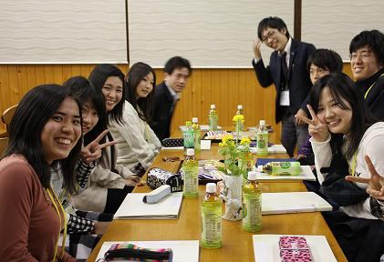
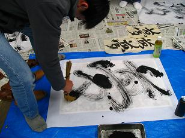

2017ＳｐｒｉｎｇＳｅｍｉｎａｒ
すごい仕事をしているアノ人も
みんな昔は10代だった・・・
３月２５日（土）
浅野雅巳さん

|
『この泥あればこそ咲け蓮の花
－落ちこぼれが追い求め続ける夢ー』
浅野撚糸株式会社 代表取締役社長
略歴：
昭和35年生まれ
学歴：
昭和54年 大垣北高等学校卒
昭和58年 福島大学教育学部中学保健体育学科卒
職歴：
昭和58年4月 輪之内町立仁木小学校赴任
昭和61年4月 海津町立日進中学校赴任
昭和62年4月 浅野撚糸株式会社入社
平成7年11月 代表取締役社長
民間団体歴：
平成 8年1月 (社) 大垣青年会議所 副理事
平成10年1月 同 監事
平成11年4月 西濃青年のつどい協議会会長
平成15年4月 (社) 大垣ロータリークラブ 理事
平成16年7月 同 理事
平成13年4月 (学法)岐阜聖徳学園大学附属高校育友会会長
受賞歴：
平成25年 第5回ものづくり日本大賞「経済産業大臣賞」受賞
平成26年 科学技術分野の文部科学大臣表彰「科学技術賞」受賞
平成26年 第28回中日産業技術賞「特別奨励賞」受賞
メッセージ：
蓮の花は泥が根につき、きれいな花をさかせます。
きれいな清水では、花が咲かないのです。
人も温室育ちでは、いい顔（花）になりません。
夢を追い求め、挫折し、それでも追い求め、また挫折する。
この繰り返しがいい顔（花）に。
まずは、大きな夢を持つところから始めてほしい。
そして挫折（泥）を繰り返してほしい。
そしていい顔の大人になってほしい。
|
牛丸久里さん
牛丸ゆうきさん

|
『看護という仕事のやりがい』
牛丸久里（ひさと）さん
略歴：
昭和50年 髙山赤十字看護学校 卒業
平成28年まで 看護師・看護教師として高山赤十字病院勤務
牛丸ゆうきさん
略歴：
平成22年 信州大学医学部保健学科看護学部 卒業
平成22年 高山赤十字病院勤務
メッセージ：
看護の仕事ってどんなかな？・・・についてお話しします。 |
３月２６日（日）
高木 繁さん

|
『身の回りの不思議？なこと』
名古屋工業大学 教授・学長特別補佐
略歴：
熊本県出身
開成学園高校卒業
東京大学理学部化学科卒業
東京大学理学研究科 化学 博士課程修了
専門分野 無機化学、錯体化学
メッセージ：
今回、いくつかのテーマでお話しします。「水素水」が今はやっていますが、そもそも何なのだろう・・・そして、本当に身体に良いのだろうか・・レンジ調理した野菜でガンになる・・それはどういった根拠なのだろうか・・というように、身近に言われていることを化学（科学）の目で眺めてみようとおもいます。
|
和田賢治さん

|
『夢ってなんだろう
～大きく変わる世の中での
”自分”の見つけ方～』
岐阜県森林文化アカデミー 講師
略歴：
岐阜市生まれ
16歳で軍事政権下のミャンマーへ1年間単身留学
2001年 国際協力分野を志し、渡米
2005年 アメリカ イリノイ大学アーバナシャンペ‐ン校
工芸美術学部都市計画学科卒業
2006年 トヨタ自動車入社
大量生産・大量消費に疑問を持ち、父親から譲り受け高校生の
時から使ってきた古いデスクを見て、地域の資源で長く使えるものを地域のために作りたいと思い、木工の道に進む。
2009年 飛騨髙山にて木工修行開始
自分の生活で使う道具は自分で作る、壊れたら自分で直すという暮らし方を広めるため、まちづくりとものづくりをかけあわせたプロジェクトを実施。
2015年 アベマキ学校机プロジェクトが第1回ウッドデザイン賞
優秀賞（林野庁長官賞）受賞
メッセージ：
人生は旅であり、冒険です。自らその足を１歩前に踏み出すことで、見える景色が変わります。
|
杉原成幸さん

|
『あなたにとって「やりがいのある仕事」とは』
フリーランスライター、経営倫理士
略歴：
1962年 愛知県生まれ。
愛知大学卒業後、事務用品メーカー、業界新聞社を経てライター
として独立。
学校広報（例：入学案内、同窓会会報誌）、企業広報（例：会社案内、
入社案内、ＣＳＲレポート）、社史などの取材・執筆を手掛ける。
2010年 法政大学大学院政策創造研究科入学
2013年 同研究科修了（修士：政策学）
メッセージ：
高校時代の私は、自分の将来についてしっかりと考えたことはありませんでした。そんな私でも、今は取材した方々から感謝されえることも多く、「この仕事をしていてよかった」と感じています。「やりがいを感じる仕事に巡り合うためには、どうしたらよいのでしょうか。みなさんと一緒に考えたいと思います。
|
201７春セミナー 講師紹介 （講義順）
日 程： 2017年3月25日（土）、26日(日）
会 場： 友雪館、Yu-Meハウス（飛騨市河合町）
参 加 費： 8,000円
集合・解散場所： ＪＲ飛騨古川駅前 ＊ＪＲ飛騨古川駅前よりセミナー会場までバスを運行します＊

春セミナーでは、医療、福祉、芸術、報道、など、各界で活躍中の5名を講師に迎えます。
過去の春セミナーでは、12歳から20歳までの受講生が参加しました。
将来に向けて、夢や希望を広げるきっかけづくりとなる講座です。
セミナー
夢のたまご塾 飛騨アカデミー
リンク
ゆめたま通信
講師紹介
賛助会
組織
写真集
セミナー
ゆめたまホーム
岐阜県飛騨市より世界に発信 「夢のたまご」を育てようよ！
